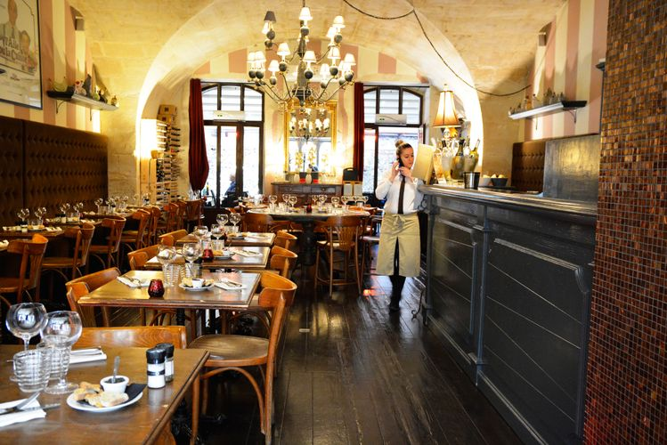

arrow_backCache dans une cour interieure du centre ancien, loin de l'agitation touristique, l'Aile ou la Cuisse est l'adresse que les connaisseurs se chuchotent. Une cuisine provencale creatrice, dans un cadre intimiste et preserye.
Le chef travaille exclusivement les produits du marche du mercredi — ce qui arrive dans la cuisine le matin determine la carte du midi. Fraicheur absolue garantie, plats qui changent chaque semaine selon la saison.
La carte des vins est axee sur les Alpilles et les Baux-de-Provence — une selection pointue de petits domaines locaux, naturels et bio, en accord parfait avec la cuisine.